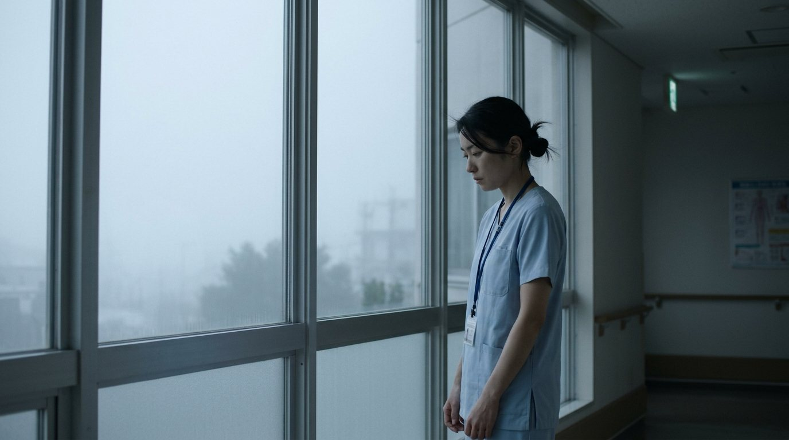

今の職場、このまま続けていいのかな。
いきなり答えを出さなくて大丈夫。
まずは最近のことを、少しだけ振り返ってみませんか。
当てはまるものをタップしてください（いくつでも）。
当てはまったのは0/ 6つ
それは、あなたの“がんばり不足”ではありません。
では、なぜくり返すのでしょう？条件の前に、まず“働きやすさ”で選ぶ。
求人票の言葉はどこも似ています。違いが出るのは、帰れる時間、人との距離、からだの負担——書かれていない部分です。だから私たちは、そこから一緒に確かめます。
- 01
急かさない
連絡の手段も頻度も、あなたが決められます。LINEだけ・平日夜だけもOK。※
- 02
隠さない
残業の実態や人の入れ替わりなど、確認できたことは正直にお伝えします。※
- 03
無理にすすめない
話してみて「今の職場に残る」と決めても、それも立派な答えです。
“働きやすさ”は、どんな形？

求人を紹介するだけで、終わらせません。
モヤモヤを、言葉にする
これまでの経験と「本当はどうしたいか」を一緒に整理します。
職場の“中”を確かめる
残業の実態、夜勤・オンコールの回数衛生士業務の割合や社保の種類など、聞きにくいことを代わりに確認。※
応募・面接・条件の調整
書類の添削、見学の日程調整、言い出しにくい条件の交渉まで。
入職したあとも
働きはじめて感じたギャップも、遠慮なくご相談ください。※
まずは、話すだけ。
オンライン・電話・LINEで。自宅から気軽にどうぞ。
かんたん登録
約1分資格・時期・連絡方法を入力するだけ。
無料キャリア相談
30分〜※今のモヤモヤと、大切にしたいことを整理。
紹介・見学
日程調整はおまかせ軸に合う職場だけを、確認してからご紹介。
入職・その後も
条件調整も代行退職の伝え方や入職後の相談もどうぞ。
よくある質問
電話がしつこくかかってきませんか？
連絡手段（LINE・メール・電話）と時間帯は、登録時に選べます。何度も電話をかけたり、応募を急かしたりすることはありません。※
すぐに転職するつもりがなくても、相談していいですか？
もちろんです。「続けるべきか迷っている」段階のご相談も歓迎しています。
本当に無料ですか？
はい。費用は採用した医療機関が負担する仕組みのため、求職者の方は無料です。※
今の職場に知られることはありませんか？
ご本人の同意なく、現在の勤務先に情報をお伝えすることはありません。※
ブランクがあっても大丈夫ですか？
大丈夫です。研修のある職場や、時短・扶養内など復帰しやすい働き方からご提案します。

働きやすさは、あなたが選んでいい。
続きは、あなたの話を聞かせてください。
転職するか決めていなくても大丈夫です。